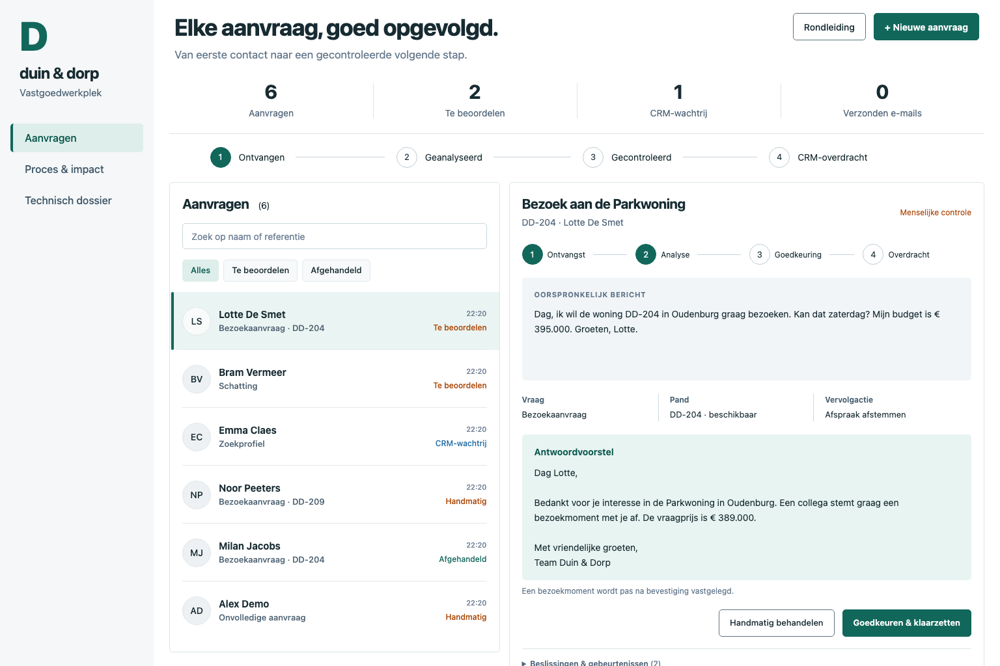

Een onafhankelijke portfolio-case voor fictief vastgoedkantoor Duin & Dorp. Geen echte klanten, CRM-koppeling of verzending.

Aanvraag → validatie en duplicaatcontrole → intentie en pandreferentie → cataloguscontrole → antwoordvoorstel → menselijke goedkeuring → outbox → CRM-mock → ontvangst.
Broncode, tests, architectuur, businesscase en kennisgids
De openbare demo draait op regels en lokale browseropslag. De aparte lokale API gebruikt SQLite en heeft een optionele OpenAI-adapter; live AI en een echt CRM zijn nog niet geverifieerd. De tijdwinst in de calculator is een scenario.